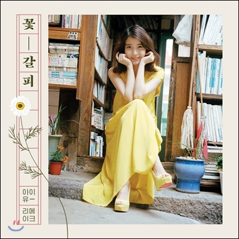

좋아하는 것
좋아하는 영화
Mamma Mia!(2008)
해어화(2015)
A Star Is Born(2018)
ToyStory3(2010)
Inception(2010)
좋아하는 음악

너의 의미(Feat. 김창완) - IU
Back to black - Amy Winehouse
Down - 오존 (O3ohn)
섬 - 검정치마(The Black Skirts)
사람이 사랑하면 안돼요 - Zuhozoon